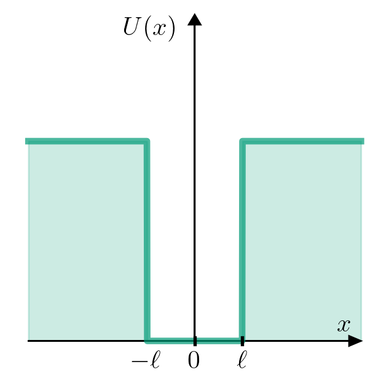

Appendix D — Una partícula en una dimensión en un potencial \(U(x)\)
\[ \definecolor{magenta}{RGB}{255,0,144} \newcommand{\cparentesis}[1]{ {\color{magenta} #1} } \newcommand{\iprn}{\cparentesis{(}} \newcommand{\fprn}{\cparentesis{)}} \newcommand{\ii}{{\rm i}} \]
El objetivo de las presentes notas es mostrar cómo resolver numéricamente la ecuación de Schrödinger independiente del tiempo de una partícula en una dimensión.
D.1 Peculiaridades numéricas
Numéricamente tenemos un espacio discreto; es decir, no tenemos la representación de todos los números reales y ni tenemos definido el infinito. Entonces,
¿qué pasa con el Cálculo?
¿qué pasa con la continuidad y el concepto de límite?
¿cómo representamos las funciones?
¿cómo representamos la derivada de una función?
¿cómo planteamos las ecuaciones diferenciales?
Notamos que los números anteriores tienen un número finito de decimales.
# ¿Cómo representamos la recta de los números reales?
# (uso de la función linspace)
linspace(-10,10)Tomamos más puntos que representen el intervalo
# ¿Cómo representamos la recta de los números reales?
# (uso de la función linspace)
linspace(-10,10,1000001)# Mostrar el primer y último valor del arreglo x
# x[-1]: me da el último elemento del arreglo x
x[-1]D.1.1 Funciones de una variable
D.2 Derivada de una función
Recordemos la definición de la derivada:
\[\begin{align} f'(x) = \frac{d}{dx} f(x) = \lim_{\Delta x \to 0} \frac{f(x+\Delta x)-f(x)}{\Delta x} \end{align}\]
Dado que tenemos un número finito de números reales, no podremos tomar el límite. Por lo que sólo tendremos una aproximación a la derivada \[\begin{align} \frac{d}{dx} f(x) \approx \frac{f(x+\Delta x)-f(x)}{\Delta x} \end{align}\]
Ejemplo: Supongamos que tenemos un conjunto de \(n\) puntos (números reales), \[\begin{align}
\{x_0,x_1,x_2,\ldots,x_{n-1}\}\,.
\end{align}\] Supongamos que los \(n\) puntos están ordenados y uniformemente distribuidos en un intervalo; es decir, se obtienen utilizando la función linspace.
Por lo que tenemos los valores de la función en dicho conjunto de puntos \[\begin{align} \{ f(x_0), f(x_1),f(x_2),\ldots, f(x_{n-1}) \} \end{align}\]
Entonces, la derivada en el punto \(x_0\) será aproximadamente, \[\begin{align} \frac{d}{dx} f(x)\Bigg|_{x_0} \approx \frac{f(x_1)-f(x_0)}{x_1-x_0} \end{align}\] donde identificamos que \(\Delta x=x_1-x_0\).
N.B. Dado que los \(n\) puntos están uniformemente distribuidos, el valor de \(\Delta x\) es igual para toda pareja de puntos sucesivos.
# Ejemplo: f = x^2 -> d/dx f = 2x
x = linspace(-10,10,100)
Δx = x[1]-x[0]
f = x*x
df_dx = (roll(f,-1)-f)/ΔxCode

D.2.1 Derivada como una matriz
Notemos que podemos reescribir la derivada como un producto de una matriz por un vector.
Supongamos que conocemos la función en cinco puntos: \[ \begin{align} \{x_0,x_1,x_2,x_3,x_4\} \end{align} \]
\[ \begin{align} \{f(x_0),f(x_1),f(x_2),f(x_3),f(x_4)\} \end{align} \] Entonces, la derivada en cada punto \[ \begin{align} \frac{d}{dx} f\Bigg|_{x_0} = \frac{f(x_1)-f(x_0)}{\Delta x}=\frac{f(x_1)}{\Delta x}-\frac{f(x_0)}{\Delta x} = -\frac{f(x_0)}{\Delta x} + \frac{f(x_1)}{\Delta x} \end{align} \]
\[ \begin{align} \frac{d}{dx} f\Bigg|_{x_1} = \frac{f(x_2)-f(x_1)}{\Delta x}=\frac{f(x_2)}{\Delta x}-\frac{f(x_1)}{\Delta x}= -\frac{f(x_1)}{\Delta x} + \frac{f(x_2)}{\Delta x} \end{align} \] \[ \begin{align} \frac{d}{dx} f\Bigg|_{x_2} = \frac{f(x_3)-f(x_2)}{\Delta x}=\frac{f(x_3)}{\Delta x}-\frac{f(x_2)}{\Delta x}= -\frac{f(x_2)}{\Delta x} + \frac{f(x_3)}{\Delta x} \end{align} \] \[ \begin{align} \frac{d}{dx} f\Bigg|_{x_3} = \frac{f(x_4)-f(x_3)}{\Delta x}=\frac{f(x_4)}{\Delta x}-\frac{f(x_3)}{\Delta x}= -\frac{f(x_3)}{\Delta x} + \frac{f(x_4)}{\Delta x} \end{align} \]
Organicemos los valores de la función en un vector columna: \[ \begin{align} \left[\begin{array}{c} f(x_0)\\ f(x_1)\\ f(x_2)\\ f(x_3)\\ f(x_4)\\ \end{array}\right] \end{align} \]
Entonces, podemos reescribir las expresiones anteriores de la derivada como el producto de una matriz por un dicho vector de la siguiente manera: \[ \begin{align} \left[\begin{array}{ccccc} -\frac{1}{\Delta x}&\frac{1}{\Delta x}&0&0&0\\ 0&-\frac{1}{\Delta x}&\frac{1}{\Delta x}&0&0\\ 0&0&-\frac{1}{\Delta x}&\frac{1}{\Delta x}&0\\ 0&0&0&-\frac{1}{\Delta x}&\frac{1}{\Delta x}\\ 0&0&0&0&-\frac{1}{\Delta x}\\ \end{array}\right] \left[\begin{array}{c} f(x_0)\\ f(x_1)\\ f(x_2)\\ f(x_3)\\ f(x_4)\\ \end{array}\right] \end{align} \] ¿Qué tamaño tiene la matriz?
E y la función ones()
ones(4)
F Ejemplo: f = x^2 -> d/dx f = 2x
N = 100 x = linspace(-10,10,N) Δx = x[1]-x[0] f = xx Matriz = -(1/Δx)diag(ones(N))+(1/Δx)*diag(ones(N-1),1) df_dx = dot(Matriz,f)
G Graficar hasta antes del último punto
plot(x[:-1],df_dx[:-1],‘–’)
De igual forma, podíamos haber comenzado con la siguiente definición de la derivada \[\begin{align} f'(x) = \frac{d}{dx} f(x) = \lim_{\Delta x \to 0} \frac{f(x)-f(x-\Delta x)}{\Delta x} \end{align}\]
Por lo que la aproximación de la derivada sería: \[\begin{align} \frac{d}{dx} f(x) \approx \frac{f(x)-f(x-\Delta x)}{\Delta x} \end{align}\]
H Ejemplo: f = x^2 -> d/dx f = 2x
x = linspace(-10,10,100) Δx = x[1]-x[0] f = x*x df_dx = (f-roll(f,1))/Δx
plot(x,df_dx)
H.1 Segunda derivada
H.1.1 Segunda derivada de una función de una variable
\[\begin{align} f''(x) = \frac{d^2}{dx^2} f(x) = \lim_{\Delta x\to 0} \frac{f'(x+\Delta x)-f'(x)}{\Delta x} \end{align}\]
Nuevamente, tenemos una aproximación a la segunda derivada: \[\begin{align} \frac{d^2}{dx^2} f(x) \approx& \frac{f'(x+\Delta x)-f'(x)}{\Delta x}\\ \approx&\frac{\frac{f(x+\Delta x)-f(x)}{\Delta x}-\frac{f(x)-f(x-\Delta x)}{\Delta x}}{\Delta x}\\ \approx&\frac{f(x+\Delta x) -2f(x)+f(x-\Delta x)}{\Delta x^2}\\ \approx&\frac{f(x-\Delta x)}{\Delta x^2}-\frac{2f(x)}{\Delta x^2}+\frac{f(x+\Delta x)}{\Delta x^2} \end{align}\] donde hemos sustituido las aproximaciones de la primera derivada anteriores.
Escribamos de forma explícita la expresión anterior. Por ejemplo: consideremos nuevamente que conocemos la función en cinco puntos, ordenados e uniformemente distribuidos.
\[\begin{align} \{x_0,x_1,x_2,x_3,x_4\} \end{align}\] \[\begin{align} \{f(x_0),f(x_1),f(x_2),f(x_3),f(x_4)\} \end{align}\]
Evaluemos la segunda derivada para el punto \(x_1\)
\[\begin{align} \frac{d^2}{dx^2} f(x)\Bigg|_{x_1} \approx \frac{f(x_0)}{\Delta x^2}-\frac{2f(x_1)}{\Delta x^2} +\frac{f(x_2)}{\Delta x^2} \end{align}\]
N.B. Notemos que tanto en el primer punto, \(x_0\), y en el último punto \(x_{n-1}\) tenemos problemas para evaluar la expresión anterior.
H.1.2 Segunda derivada como una matriz
Nuevamente consideremos que conocemos el valor de la función en cinco puntos \[\begin{align} \{x_0,x_1,x_2,x_3,x_4\} \end{align}\] \[\begin{align} \{f(x_0),f(x_1),f(x_2),f(x_3),f(x_4)\} \end{align}\] y organizamos los valores de la función como un vector columna \[\begin{align} \left[\begin{array}{c} f(x_0)\\ f(x_1)\\ f(x_2)\\ f(x_3)\\ f(x_4)\\ \end{array}\right] \end{align}\]
Buscamos escribir la expresión \[\begin{align} \frac{d^2}{dx^2}f \approx &\frac{f(x-\Delta x)}{\Delta x^2}-\frac{2f(x)}{\Delta x^2}+\frac{f(x+\Delta x)}{\Delta x^2}\\ \approx & \frac{1}{\Delta x^2} f(x-\Delta x)-\frac{2}{\Delta x^2}f(x)+\frac{1}{\Delta x^2}f(x+\Delta x) \end{align}\]
Por ejemplo, en el punto \(x_1\) tenemos \[\begin{align} \frac{d^2}{dx^2}f\Bigg|_{x_1} \approx \frac{1}{\Delta x^2} f(x_0)-\frac{2}{\Delta x^2}f(x_1)+\frac{1}{\Delta x^2}f(x_2) \end{align}\]
En este caso la matriz es \[\begin{align} \left[\begin{array}{ccccc} -\frac{2}{\Delta x^2}&\frac{1}{\Delta x^2}&0&0&0\\ \frac{1}{\Delta x^2}&-\frac{2}{\Delta x^2}&\frac{1}{\Delta x^2}&0&0\\ 0&\frac{1}{\Delta x^2}&-\frac{2}{\Delta x^2}&\frac{1}{\Delta x^2}&0\\ 0&0&\frac{1}{\Delta x^2}&-\frac{2}{\Delta x^2}&\frac{1}{\Delta x^2}\\ 0&0&0&\frac{1}{\Delta x^2}&-\frac{2}{\Delta x^2}\\ \end{array}\right] \left[\begin{array}{c} f(x_0)\\ f(x_1)\\ f(x_2)\\ f(x_3)\\ f(x_4)\\ \end{array}\right] \end{align}\]
I Ejemplo: f = x^2 -> d/dx f = 2x
n = 100 x = linspace(-10,10,n) Δx = x[1]-x[0] Δx2 = ΔxΔx f = xx Matriz = (1/Δx2)diag(ones(N-1),-1)-(2/Δx2)diag(ones(N))+(1/Δx2)*diag(ones(N-1),1) d2f_dx2 = dot(Matriz,f)
plot(x,d2f_dx2) # plot(x[1:-1],d2f_dx2[1:-1])
I.1 Partícula en una caja de potencial
El Hamiltoniano de una partícula en una caja de potencial es:
\[\begin{align} \hat{H} = -\frac{\hbar^2}{2 m_e} \frac{d^2}{dx^2} + V(x) \end{align}\] donde suponemos que la partícula tiene la masa del electrón y el potencial es \[\begin{align} V(x) = \left\{ \begin{array}{ll} 0 & \text{si }0<x<\ell\\ V_0 & \text{en otro caso} \end{array}\right. \end{align}\]
Si \(V_0\) es grande podemos esperar que la solución sea parecida a la caja con paredes infinitas.
Nuestra introducción anterior nos muestra que la segunda derivada se puede escribir como una matriz. Ahora, ¿el potencial también lo podemos escribir como una matriz? La respuesta es si. Por ejemplo, escribamos
\[\begin{align} V(x) f(x) \end{align}\] si conocemos el valor de la función en cinco puntos \[\begin{align} \{x_0,x_1,x_2,x_3,x_4\} \end{align}\] \[\begin{align} \{f(x_0),f(x_1),f(x_2),f(x_3),f(x_4)\} \end{align}\] y organizamos los valores de la función como un vector columna \[\begin{align} \left[\begin{array}{c} f(x_0)\\ f(x_1)\\ f(x_2)\\ f(x_3)\\ f(x_4)\\ \end{array}\right] \end{align}\] Por lo que de forma matricial podemos escribir \[\begin{align} \left[ \begin{array}{ccccc} V(x_0)&0&0&0&0\\ 0&V(x_1)&0&0&0\\ 0&0&V(x_2)&0&0\\ 0&0&0&V(x_3)&0\\ 0&0&0&0&V(x_4)\\ \end{array}\right]\left[\begin{array}{c} f(x_0)\\ f(x_1)\\ f(x_2)\\ f(x_3)\\ f(x_4)\\ \end{array}\right] \end{align}\]
Buscamos resolver la ecuación de Schrödinger
\[\begin{align}
\hat{H}\psi = E\psi
\end{align}\] donde \(\hat{H}\) es una matriz. Numéricamente podemos determinar los eigenvalores usando la función eigh . La forma de usar dicha función es la siguiente:
donde E es un arreglo que contiene los eigenvalores y ψT tiene las eigenfunciones evaluadas en los puntos que consideramos para construir la matriz Hamiltoniana. Por cuestiones técnicas, los valores de las eigenfunciones están transpuestas. Por lo que resulta necesario transponer los valores
I.2 Partícula en una caja cuadrada
Code
from pylab import *
plt.rcParams.update({
"text.usetex": True,
"font.family": "sans-serif",
"font.sans-serif": "Helvetica",
})
ℓ = 4 # (Å)
x = linspace( -ℓ-10, ℓ+10,1000 )
U = zeros_like(x)
U[x<-ℓ] = 60
U[x> ℓ] = 60
fig,ax = plt.subplots(figsize=(4,4))
ax.plot(x,U,alpha=0.7,lw=4,c="#009B77")
ax.fill_between(x,U,0,alpha=0.2,color="#009B77")
ax.set_axis_off()
ax.set_ylim((-10.0,99))
ax.arrow(-10-ℓ,0,20+2*ℓ,0 ,length_includes_head=True,head_width=3,head_length=1,color='k' )
ax.arrow( 0,0,0,98 ,length_includes_head=True,head_width=1,head_length=3,color='k' )
ax.plot([0,0],[-1,1],lw=2,c='k')
ax.plot([ℓ,ℓ],[-1,1],lw=2,c='k')
ax.text(10+ℓ-2,3,r"$x$",fontsize=16)
ax.text(ℓ,-8,r"$\ell$",fontsize=16,ha="center")
ax.text(-ℓ,-8,r"$-\ell$",fontsize=16,ha="center")
ax.text(0,-8,r"$0$",fontsize=16,ha="center")
ax.text(-6,92,r"$U(x)$",fontsize=16);
Code
%%time
# -- Resolución numérica --
#
# Necesitamos los valores de las constantes
# ħ²/2me (en unidades "adecuadas")
#
ħ = 0.6582119514 # [eV fs]
e = 1.602e-19 # 1 eV = 1.602e-19 J
c = 299792458 # [m/s]
massfactor = e/c/c # 1 eV/c^2 = 1.79e-36 kg
me = 9.109e-31/massfactor # [eV/c^2] = 0.5x10^6 eV/c^2
c_nmfs = 299.792458 # [nm/fs]
ħ2_2me = ħ*ħ*c_nmfs*c_nmfs/2/me # eV nm^2
N = 2**12+1 # Número de puntos a considerar
xinf = 100.0 # nm
ℓ = 1.0 # nm
x = linspace(-xinf,xinf,N) # Puntos donde obtendremos las funciones
Δx = x[1]-x[0] # Δx es el mismo para todas las funciones
V0 = 10.0 # eV
V = zeros(N)
index = logical_or(x<0, x>ℓ)
V[index] = V0
Mdd = 1./(Δx*Δx)*( diag(ones(N-1),-1) -2*diag(ones(N),0) + diag(ones(N-1),1))
H = -ħ2_2me*Mdd + diag(V)
E,ψT = eigh(H)
ψ = transpose(ψT)
plot(x,ψ[0])
# xlim(-2,3)CPU times: user 1min 2s, sys: 1.11 s, total: 1min 3s
Wall time: 2.18 sCode
# Cargamos una librería con colores bonitos
import seaborn as sns
# Definimos el entorno de graficación
fig,axes = plt.subplots(ncols=1,nrows=1,figsize=(5,5))
# fig: objeto que contiene el marco donde se encontrará la gráfica
# axes: objeto que contiene los ejes donde se graficará
axes.set_xlim(-6*ℓ,6*ℓ+ℓ)
axes.plot(x,V,c="#008b8b",label="V(x)")
index = E<V0
itera = [i for i, x in enumerate(index) if x]
num_shades = len(itera)
color_list = sns.cubehelix_palette(num_shades)
for i in itera:
axes.plot(x,E[i]+ψ[i],label=r"$E_{0}$={1:>8.3f} eV".format(i+1,E[i]),c=color_list[i])
#nabove = 200
#axes.plot(x,E[itera[-1]+nabove]+5*ψ[itera[-1]+nabove],\
# label=r"$E_{0}$={1:>8.3f} eV".format(i+1,E[itera[-1]+nabove]),c=color_list[itera[-1]])
for i in itera:
axes.plot([-ℓ,ℓ],[E[i],E[i]],'--',c=color_list[i])
axes.set_xlabel("$x$ [nm]",fontsize=16)
axes.set_ylabel("$E$ [eV]",fontsize=16)
axes.legend(loc=3)
fig.tight_layout()
# fig.savefig("RectangularWell.pdf")